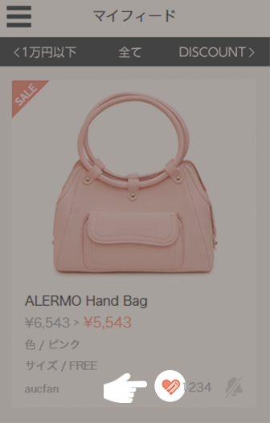

はじめてガイド
お得に賢くショッピングをするためのアプリです。気になったアイテムが値下がりしたとき、それを教えてくれます。
自分が気になったアイテムをブックマークすることです。まずは、トップフィードと呼ばれる画面（ログインすると最初に表示される画面）でクリップしてみましょう。
クリップしたアイテムが値段が下がると、プッシュ通知やメールでお知らせ届きます。
クリップをする最も簡単な方法は、トップフィードに流れてくるアイテムをタップすることです。
アイテムの写真をタップすると、そのアイテムの詳細ページに行くことができます。
画面の右下に「クリップする」というボタンがあります。それをタップすると、クリップページに移動します。そこで、色やサイズを決めて再度「クリップする」ボタンをタップすると、クリップが完了します。
後は値下りを待つだけで、あなたにお知らせが届きます。
※この他にもALERMO内でショップを見ながらクリップする方法等があります。
マイフィードには自分がクリップしたアイテムが表示されます。
この画面を使って自分がクリップしたアイテムの確認や、クリップやアラートの変更を行うことができます。
マイフィードではクリップの取り消しができます。ハート型のマークをタップすることで、クリップの取り消し、再クリップができます。
マイフィードではプッシュ通知の変更ができます。
ベル型のマークをタップすることで、プッシュ通知のON・OFFを切り替えることができます。
クリップしたアイテムが値下がりすると、プッシュ通知やメールでお知らせが行きます。マイフィードで確認して購入しましょう。